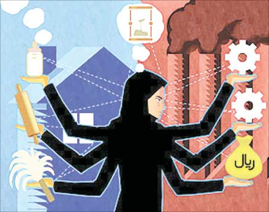

پذيرش > سایت نوشته ها > لایحهای برای ماندن زنان در خانه
 نگاهی به لایحه تسهیل اشتغال زنان نگاهی به لایحه تسهیل اشتغال زنان

 لایحهای برای ماندن زنان در خانه لایحهای برای ماندن زنان در خانه
23 اسفند 1387 - فرهنگ آشتی - نسخه قابل چاپ
لایحه تسهیل اشتغال زنان به زودی به مجلس ارائه میشود. این خبری است که هفته گذشته از سوی فاطمه آلیا نماینده مجلس شورای اسلامی اعلام شد او همچنین گفت فضای مجلس آماده رای دادن به این لایحه است. بنابراین به نظر میرسد دولت و مجلس درصدد هستند قبل از پایان دوران ریاست احمدینژاد، یکی دیگر از طرحهای پرانتقاد در حوزه زنان را به تصویب برسانند.
تابستان گذشته بود که محمود احمدینژاد ریاستجمهوری، از تدوین لایحهای به منظور تغییر زمان حضور زنان و مادران شاغل در نهادهای دولتی خبر داد. او گفت: «دولت در تلاش است تا لایحهای را به مجلس ارائه دهد که براساس آن زمان فعالیت مادرانی که در نهادهای دولتی مشغول فعالیت هستند، کمتر شود یعنی مقدار زمانی که مادران در خانه کار میکنند نیز جزو وظایف اداری آنها محسوب شود. هر زن شاغلی اگر دو فرزند در خانه دارد نصف ساعت کاری را کار کند، برای ما کافی است».
به گفته طیبزاده رئیس مرکز امور زنان و خانواده ریاستجمهوری، براساس این لایحه، ساعات کاری زنان شاغل از 44 ساعت در هفته به 36 ساعت تقلیل مییابد.
شاید در نگاه اول تقلیل ساعات کار طرحی حمایتگرانه از اشتغال زنان به نظر بیاید، اما به واقع این گونه نیست و تجربههای جهانی نیز گویای این واقعیت است که طرحهایی مانند کاهش ساعات کار،افزایش مرخصیهای مختلف و ... در نهایت منجر به کاهش تمایل کارفرمایان برای استخدام زنان و همچنین کاهش احتمال ارتقای موقعیت شغلی زنان خواهد شد.
تحقیقات جهانی در مورد عرصه اشتغال گویای نابرابری جنسیتی در این عرصه در اکثر نقاط جهان است، به گونهای که میتوان گفت بازار کار به دو بخش زنانه و مردانه تقسیم شده است. بخش مردانه شامل مشاغلی است که از لحاظ پرداخت مزد، تامین بیشتر، فرصتهای پیشرفت و امنیت در وضعیت نسبتا مناسبی قرار دارد، اما بخش زنانه شامل مشاغلی میشود که عمدتا پارهوقت و موقتی است و دستمزد کمتری دارد، این بخش به زنان اختصاص مییابد، چراکه این کلیشه در اذهان جا افتاده است که زنان به دلیل وظایف مادری و همسری قادر به برعهده گرفتن شغلهای تماموقت نیستند. کشورهای توسعهیافته برای شکستن مرزهای بازار کار دوگانه، تلاش کردهاند زنان را در ایفای نقشهای مادری و خانهداری کمک کنند تا آنها بتوانند زمان بیشتری را صرف اشتغال خود کنند، چراکه افزایش حضور زنان در عرصه اشتغال از ملزومات توسعه اقتصادی جوامع است. اما به نظر میرسد لایحه تسهیل اشتغال زنان که در دولت نهم تدوین شده بدون در نظر گرفتن این تجربههای جهانی، تنها به این میاندیشد که همچنان خانه را به عنوان اولویت اصل زنان حفظ نماید و مانع افزایش حضور زنان در بازار کار شود.
فاطمه راکعی دبیرکل جمعیت زنان مسلمان نواندیش با انتقاد از لایحه دولت نهم، هدف آن را حذف تدریجی زنان از جامعه و از صحنه کار و تلاش در عرصه اجتماعی میداند او ميگويد: هنگامی که با کار کردن زنان در ادارات دولتی و خصوصی بدون اینکه خود زنان درخواست کنند اینگونه برخورد میشود، طبیعی است که مراکز دولتی و خصوصی اولویت خود را در استخدام کارمند به کارمندان مرد خواهند داد».
همچنان که فاطمه راکعی نیز میگوید تحقیقات نشان میدهد قوانین حمایتی یکی از عوامل نابرابری جنسیتی در بازار کار است. مهرانگیز کار، در کتاب خود با عنوان زنان در بازار کار ایران به قوانین حمایتی از زنان در بازار کار اشاره میکند، از جمله منع اشتغال زنان در صنعت در شب، منع کار زنان در مشاغل سخت، مرخصی زایمان و مرخصی شیر، که سبب میشوند کارفرمایان تمایل کمتری به استخدام زنان داشته باشند، به خصوص اگر بار مالی این قوانین برعهده کارفرمایان باشد. مهرانگیز کار مینویسد: «به دلیل تبعات منفی قوانین حمایتگرایانه قطعنامهای در سال 1975 در کنفرانس بینالمللی کار در مورد ارتقای برابری فرصت و رفتار برای کارگران زن به تصویب رسید که در آن تاکید شده بود؛ «در پرتو دانش فنی جدید و پیشرفتهای تکنولوژیکی در تمام مقررات حمایتی که برای زنان وضع شده است. باید تجدید نظر صورت بگیرد»، بنابراین تبعات منفی لایحه تسهیل اشتغال زنان را نمیتوان نادیده گرفت. فریده ماشینی رئیس کمیسیون زنان جبهه مشارکت در این مورد میگوید: این لایحه برگرفته از نگاه متفاوت به مسئله زنان است. شاید اینگونه لوایح در ابتدا مورد استقبال و حمایت زنان قرار بگیرد اما باید دانست که در کل مسئله دیگری در این لایحه نهفته است.
او میگوید: این لایحه هم در حوزه کاری و هم در حوزه خانواده به ضرر زنان خواهد بود زیرا در حوزه کاری هیچ کارفرمایی حاضر به استخدام کارگر زن با ساعات کاری کمتر ولی حقوق یکسان نیست و واضح است که در اینچنین موارد مردان ارجحیت پیدا میکنند. همچنین ساعاتی که برای زنان کاهش یافته است بیشک ضررهایی را برای کارفرما به دنبال خواهد داشت که مشخص نیست این زیانها چگونه جبران میشود.
ماشینی نگاهی نیز به تاثیر این لایحه بر مسئولیتهای زنان در حوزه خانواده دارد. «با تصویب این لایحه به جای تاکید بر مسئولیت مشترک مردان و زنان در خانواده، همه مسئولیتها بر دوش زنان م یافتد.» از سوی دیگر موافقان کاهش ساعات کار زنان معتقدند لایحه دولت منجر به کاهش استخدام زنان نخواهد شد بلکه این امکان را به آنها میدهد که بخشی از ساعات روز را به کارهای خانه اختصاص دهند. مریم بهروزی دبیرکل جامعه زینب در این مورد میگوید: «مردان به دلیل آنکه مسئول پرداخت نفقه و تامین هزینه خانواده هستند، مزایای قابل توجهی دارند که زنان از آن بیبهرهاند». او میافزاید: »دولت برای حق عائلهمندی مردان محتمل هزینههایی میشود، بنابراین زنان هم باید قسمتی از روز را به کارهای خانه و رسیدگی به امور خانواده اختصاص دهند».
چالش برسد قوانین حمایتی از گذشته حتی در بین فمنیستها و فعالان مسائل زنان وجود داشته است، چالشی که بین فمنیستهای معتقد به برابری و فمنیستهای معتقد به تفاوت بحثهای زیادی را برانگیخته است. فمنیستهای برابری همواره نگران بودهاند هر نوع حمایت خاص از زنان براساس تفاوتهای آنان با مردان به این معنا تلقی شود که زنان فاقد توانایی لازم برای حفظ خود هستند، ضعیفتر از مردانند و جنس دوم محسوب میشوند. آنان معتقد بودند اگر قوانین حمایتی منسوخ نشود، پیشرفت زنان در تجارت وضعیت متوقف میشود و زنان به پائینترین مشاغل که کمترین دستمزد را دارند، احاله خواهند شد.
در مقابل فمنیستها تفاوتهایی را مطرح میکردند که نابرابری به عنوان یک پدیده اجتماعی و نابرابری در دسترسی زنان و مردان به منابع امری واقعی است، بنابراین حقوق یکسان به برابری زنان و مردان منجر نمیشود بلکه زنان نیازمند قوانین متفاوتی هستند، چراکه برابری را باید در نتایج جستجو کرد نه در منابع. بنابراین از نظر این دیدگاه وضع قوانین حمایتگرایانه از زنان برای رسیدن آنها به شرایط برابر با مردان الزامی است. این رویکرد البته با دیدگاه دولت نهم که آشکارا لایحه تسهیل اشتغال زنان را به معنای حمایت از نقش مادری آنان بیان میکند متفاوت است، همچنان که احمدینژاد هنگامی که نوید نهایی شدن این داعیه را میداد، گفت باید مواظب باشیم نقش مادری پایمال نشود.
رويكرد حمايتگرانه به دنبال وضع قوانين براي كاهش تبعيضهاي اجتماعي و افزايش مشاركت زنان است.
دولت نهم از ابتدای روی کار آمدن با تغییر نام مرکز امور مشارکت زنان به مرکز زنان و خانواده رویکرد خود در مورد زنان را نشان داد؛ رویکردی که معتقد به حفظ نقشهای سنتی زنان در خانه و ممانعت از مشارکت اجتمای و اقتصادی آنان است. در مورد لایحه پیشنهادی نیز هرچند ممکن است زنان شاغل از آن خشنود شوند، اما باید بدانند این لایحه ارتقای شغلی آنان و استخدام زنان دیگر را با مشکل مواجه میکند و همچنین تقسیم جنسیتی نقشها را برای همیشه حفظ کرده و سبب میشود بار کارهای خانه به طور کامل بر دوش زنان خانهدار بماند و مردان همچون گذشته بتوانند از زیر این مسئولیت شانه خالی کنند.
پرستو سرمدي
ارسال به
بالاترین
،
توییتر
،
فریندفید
،
فیسبوک
در همين بخش :
 یک خبر تلخ؟ یک قانونشکنی؟ یک تصمیم بخشنامهای جدید؟ یک خبر تلخ؟ یک قانونشکنی؟ یک تصمیم بخشنامهای جدید؟
چرا بایست به سکسوالیته پرداخت؟ / نفیسه آزاد
آزارجنسی خانگی؛ «قربانی» نه، «نجات یافته»
زنان، بزرگترین بازندگان بهار عرب
سانسور از دیدگاه جنسیتی/الهه امانی
ديگر بخش ها :
طرح یک میلیون امضا
|
مقالات
|
سایت نوشته ها
|
اخبار
|
گزارش كمپين
|
گفت و گو
|
علیه سکوت
|
كوچه به كوچه
|
نامه های شما
|
گزارش ویژه
|
گفتگو با اعضا
|
ویژه سالگرد کمپین
|
تصویر برابری
|
دل آرام علی
|
تریبون
|
مقالات
|
تاریخ شفاهی
|
خارج از چارچوب
|
کتابخانه
|
درباره کمپین
|
کمپین در شهرها
|
کمپین در بند
|
صدای تغییر
|
ویژه 22 خرداد
|
لایحه حمایت از خانواده
|
گالری
|
عشا مومنی
|
امیر یعقوبعلی
|
خدیجه مقدم
|
راحله عسگری زاده و نسیم خسروی
|
پروین اردلان،جلوه جواهری، مریم حسین خواه، ناهید کشاورز
|
زینب پیغمبرزاده
|
سعیده امین، سارا ایمانیان، محبوبه حسین زاده، ناهید کشاورز و همایون نامی
|
احترام شادفر
|
نسیم سرابندی زاده،فاطمه دهدشتی
|
وبلاگ مهمان
|
پرونده خرم آباد
|
دستگیری ها
|
مریم مالک
|
پرستو اللهیاری
|
مهرنوش اعتمادی
|
سمیه رشیدی
|
Other Languages
|
همراهان
|
«فراخوان کمپین ده روز با بهاره هدایت»
| English
|